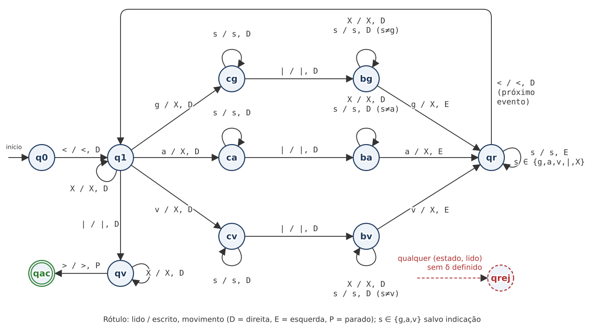
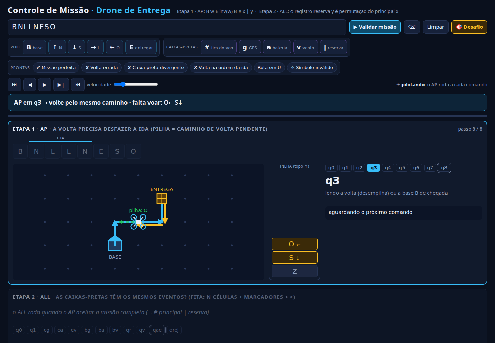
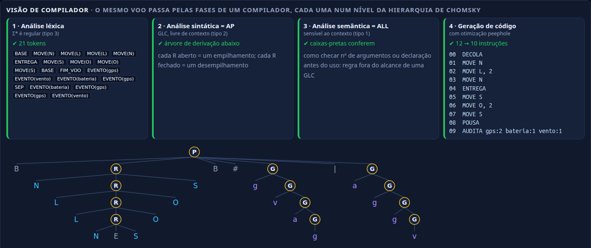

Um drone de entrega sai da base, voa uma rota pela malha da cidade até o ponto de entrega e precisa voltar pelo mesmo caminho: o último trecho voado é o primeiro a ser desfeito, sempre na direção oposta. Isso evita áreas não autorizadas e reproduz o "fio de Ariadne" da navegação sem GPS confiável. Durante o voo, duas caixas-pretas (gravadores de eventos) registram o que aconteceu. A principal grava de forma síncrona. A reserva usa um buffer assíncrono e pode gravar os mesmos eventos em outra ordem. A auditoria exige que as duas tenham registrado exatamente os mesmos eventos, nas mesmas quantidades.
O registro de um voo é uma cadeia com o formato B w E inv(w) B # x | y. A aplicação valida essa cadeia em duas etapas:
inv(w), ou seja, a ida w lida de trás para frente com cada direção trocada pela oposta.x|y depois do #. Verifica se o registro reserva y é uma permutação do principal x.| Símbolo | Significado | Símbolo | Significado |
|---|---|---|---|
B | base (partida e chegada) | # | fim da rota, início dos registros |
N S L O | Norte, Sul, Leste, Oeste (opostos: N↔S, L↔O) | g a v | eventos: leitura de GPS, alerta de bateria, rajada de vento |
E | ponto de entrega (meio da rota) | | | separa a caixa-preta principal da reserva |
Exemplo. Em BNLLNESOOSB#gvag|aggv a ida é NLLN e a volta é SOOS: o último N é desfeito primeiro, por um S, depois os dois L por O e por fim o primeiro N por um S. O registro reserva aggv tem os mesmos eventos de gvag (2 g, 1 v e 1 a), por isso a cadeia é aceita pelas duas etapas.
argparse, csv, json e random. Disponível em: https://docs.python.org/3/.As referências embasam os conceitos e os métodos de prova. O problema, as linguagens, as gramáticas, os autômatos e os casos de teste foram elaborados pelo autor e não foram adaptados de exercícios de sala nem do exemplo do enunciado.
ΣAP = { B, N, S, L, O, E, #, |, g, a, v }. Seja opp a troca de direção (opp(N)=S, opp(S)=N, opp(L)=O, opp(O)=L) e, para w = x1x2…xk, seja inv(w) = opp(xk)…opp(x2)opp(x1).
Em palavras: o voo parte da base, faz ao menos um movimento, entrega, volta desfazendo a ida em ordem inversa e chega à base. Depois vêm dois registros não vazios separados por |.
G = (V, ΣAP, P, P), com não terminais V = { P, R, G }, símbolo inicial P (de "plano de voo") e produções:
P → B R B # G | G R → N R S | S R N | L R O | O R L (um movimento na ida e o seu oposto na volta, aninhados) R → N E S | S E N | L E O | O E L (o movimento mais interno e o ponto de entrega) G → g G | a G | v G | g | a | v (registro não vazio de eventos)
Cada aplicação de R → x R opp(x) produz um movimento de ida e "promete" o movimento oposto depois de tudo o que R ainda vai gerar. As promessas se cumprem da mais interna para a mais externa, que é o comportamento LIFO de uma pilha.
Derivação mais à esquerda de BNLLNESOOSB#gvag|aggv (21 símbolos):
| # | Forma sentencial | Produção aplicada |
|---|---|---|
| 0 | P | |
| 1 | B R B # G | G | P → B R B # G | G |
| 2 | B N R S B # G | G | R → N R S |
| 3 | B N L R O S B # G | G | R → L R O |
| 4 | B N L L R O O S B # G | G | R → L R O |
| 5 | B N L L N E S O O S B # G | G | R → N E S |
| 6 | B N L L N E S O O S B # g G | G | G → g G |
| 7 | B N L L N E S O O S B # g v G | G | G → v G |
| 8 | B N L L N E S O O S B # g v a G | G | G → a G |
| 9 | B N L L N E S O O S B # g v a g | G | G → g |
| 10 | B N L L N E S O O S B # g v a g | a G | G → a G |
| 11 | B N L L N E S O O S B # g v a g | a g G | G → g G |
| 12 | B N L L N E S O O S B # g v a g | a g g G | G → g G |
| 13 | B N L L N E S O O S B # g v a g | a g g v | G → v |
O aninhamento fica visível nos passos 2 a 5: N [ L [ L [ N E S ] O ] O ] S.
É livre de contexto porque é gerada pela GLC G (Lema 1, seção 4.4) e reconhecida pelo AP da seção 4.
Não é regular (lema do bombeamento para linguagens regulares; Sipser, seção 1.4). Suponha que LAP seja regular, com constante de bombeamento p. Tome s = B Np E Sp B # g | g ∈ LAP, com |s| ≥ p. Em qualquer divisão s = xyz com |xy| ≤ p e |y| ≥ 1, o trecho xy fica dentro de "B Np−1". Se y contém o B inicial, a cadeia xz não começa por B e não pertence a LAP. Caso contrário, y = Nk com k ≥ 1 e xy²z = B Np+k E Sp B # g | g. Essa cadeia não pertence a LAP, porque inv(Np+k) = Sp+k ≠ Sp. Isso contradiz o lema. Intuitivamente, um autômato finito teria que lembrar quantos movimentos (e quais, em que ordem) faltam desfazer, sem limite, e isso exige memória ilimitada. É o papel da pilha.
MAP = (Q, Σ, Γ, δ, q0, Z, F), com:
| Estado | Papel |
|---|---|
| q0 | espera a base B de partida |
| q1 | espera o 1º movimento da ida (garante w não vazio) |
| q2 | lê a ida: a cada movimento empilha o movimento oposto (a volta pendente); ao ler E passa para a volta |
| q3 | lê a volta: cada movimento lido deve ser igual ao topo, que é desempilhado; ao ler B exige o topo Z |
| q4 | espera o separador # |
| q5 / q6 | 1º evento / demais eventos do registro principal, até o separador | |
| q7 / q8 | 1º evento / demais eventos do registro reserva (q8 é final) |
Notação δ(estado, símbolo lido, topo) = (novo estado, cadeia que substitui o topo), com o topo à esquerda e ε indicando desempilhar. Nas linhas abaixo, x, t ∈ {N,S,L,O} e e ∈ {g,a,v}. O total é de 44 transições, listadas uma a uma no Apêndice A.
| Transição | Qtd. | Operação na pilha | Significado |
|---|---|---|---|
| δ(q0, B, Z) = (q1, Z) | 1 | mantém | parte da base |
| δ(q1, x, Z) = (q2, opp(x)Z) | 4 | empilha opp(x) | 1º movimento da ida; a volta pendente vai para a pilha |
| δ(q2, x, t) = (q2, opp(x)t) | 16 | empilha opp(x) | demais movimentos da ida |
| δ(q2, E, t) = (q3, t) | 4 | mantém | ponto de entrega: começa a volta |
| δ(q3, x, x) = (q3, ε) | 4 | desempilha | o movimento de volta lido é o que a pilha pede |
| δ(q3, B, Z) = (q4, Z) | 1 | mantém | chegou à base sem volta pendente |
| δ(q4, #, Z) = (q5, Z) | 1 | mantém | separador dos registros |
| δ(q5, e, Z) = (q6, Z) δ(q6, e, Z) = (q6, Z) | 3 + 3 | mantém | registro principal não vazio |
| δ(q6, |, Z) = (q7, Z) | 1 | mantém | separador das caixas-pretas |
| δ(q7, e, Z) = (q8, Z) δ(q8, e, Z) = (q8, Z) | 3 + 3 | mantém | registro reserva não vazio |
Para cada trio (estado, símbolo, topo) há no máximo uma transição, e não há transições ε. Logo MAP é um AP determinístico. Como toda transição consome exatamente um símbolo, a computação para em no máximo n passos para uma entrada de tamanho n. A decisão sai da configuração final: aceita se a entrada foi consumida por inteiro e o estado é q8; caso contrário, rejeita.
Lema 1 (gramática). R ⇒* u, com u terminal, se e somente se u = w E inv(w) para algum w ∈ {N,S,L,O}+. A prova é por indução em |w|. A base é R → x E opp(x), que dá w = x. No passo, R → x R opp(x) ⇒* x w′ E inv(w′) opp(x) = (xw′) E inv(xw′), porque inv(xw′) = inv(w′) opp(x). Como G gera exatamente as cadeias não vazias sobre {g,a,v}, temos L(G) = LAP.
Lema 2 (pilha da ida). Depois de ler B w (w ≠ ε), o AP está em q2 com a pilha inv(w)Z, com o topo à esquerda. A prova também é por indução. q1 lendo x deixa opp(x)Z = inv(x)Z. Em q2, ler x sobre a pilha inv(w)Z deixa opp(x)inv(w)Z = inv(wx)Z.
Lema 3 (pilha da volta). Em q3, o AP só avança quando o símbolo lido é igual ao topo, que é então desempilhado. Só aceita B com Z no topo. Portanto, a partir de (q3, inv(w)Z), o AP chega a q4 lendo u B se e somente se u = inv(w). Por fim, q4 a q8 formam um autômato finito para #[gav]+|[gav]+, com a pilha fixa em Z.
Juntando os três lemas, L(MAP) = LAP = L(G). A correspondência com a gramática é direta. Depois de k expansões R → x R opp(x), a forma sentencial é B w R inv(w) B # G | G. O sufixo inv(w), "prometido" à direita de R, é exatamente o conteúdo da pilha na configuração (q2, …, inv(w)Z). A produção R → x E opp(x) corresponde a ler o último movimento e o E. Daí em diante, cada símbolo da volta cumpre uma promessa, ou seja, desempilha. Em resumo: a pilha guarda o caminho de volta que ainda falta voar.
Saída de python3 main.py --modulo ap "BNLLNESOOSB#gvag|aggv". A posição de leitura é o índice do próximo símbolo, e a pilha é mostrada com o topo à esquerda.
| Passo | Estado | Pos. | Entrada restante | Pilha | Transição aplicada |
|---|---|---|---|---|---|
| 0 | q0 | 0 | BNLLNESOOSB#gvag|aggv | Z | δ(q0, B, Z) = (q1, Z) |
| 1 | q1 | 1 | NLLNESOOSB#gvag|aggv | Z | δ(q1, N, Z) = (q2, SZ) |
| 2 | q2 | 2 | LLNESOOSB#gvag|aggv | SZ | δ(q2, L, S) = (q2, OS) |
| 3 | q2 | 3 | LNESOOSB#gvag|aggv | OSZ | δ(q2, L, O) = (q2, OO) |
| 4 | q2 | 4 | NESOOSB#gvag|aggv | OOSZ | δ(q2, N, O) = (q2, SO) |
| 5 | q2 | 5 | ESOOSB#gvag|aggv | SOOSZ | δ(q2, E, S) = (q3, S) |
| 6 | q3 | 6 | SOOSB#gvag|aggv | SOOSZ | δ(q3, S, S) = (q3, ε) |
| 7 | q3 | 7 | OOSB#gvag|aggv | OOSZ | δ(q3, O, O) = (q3, ε) |
| 8 | q3 | 8 | OSB#gvag|aggv | OSZ | δ(q3, O, O) = (q3, ε) |
| 9 | q3 | 9 | SB#gvag|aggv | SZ | δ(q3, S, S) = (q3, ε) |
| 10 | q3 | 10 | B#gvag|aggv | Z | δ(q3, B, Z) = (q4, Z) |
| 11 | q4 | 11 | #gvag|aggv | Z | δ(q4, #, Z) = (q5, Z) |
| 12 | q5 | 12 | gvag|aggv | Z | δ(q5, g, Z) = (q6, Z) |
| 13 | q6 | 13 | vag|aggv | Z | δ(q6, v, Z) = (q6, Z) |
| 14 | q6 | 14 | ag|aggv | Z | δ(q6, a, Z) = (q6, Z) |
| 15 | q6 | 15 | g|aggv | Z | δ(q6, g, Z) = (q6, Z) |
| 16 | q6 | 16 | |aggv | Z | δ(q6, |, Z) = (q7, Z) |
| 17 | q7 | 17 | aggv | Z | δ(q7, a, Z) = (q8, Z) |
| 18 | q8 | 18 | ggv | Z | δ(q8, g, Z) = (q8, Z) |
| 19 | q8 | 19 | gv | Z | δ(q8, g, Z) = (q8, Z) |
| 20 | q8 | 20 | v | Z | δ(q8, v, Z) = (q8, Z) |
| 21 | q8 | 21 | ε | Z | |
| aceita: entrada consumida no estado final q8 | |||||
Rejeição no cenário BNLLNESOONB#gvag|aggv (últimos passos): na posição 9 a pilha pede S (o oposto do primeiro N da ida), mas a entrada traz N.
| Passo | Estado | Pos. | Entrada restante | Pilha | Transição aplicada |
|---|---|---|---|---|---|
| 4 | q2 | 4 | NESOONB#gvag|aggv | OOSZ | δ(q2, N, O) = (q2, SO) |
| 5 | q2 | 5 | ESOONB#gvag|aggv | SOOSZ | δ(q2, E, S) = (q3, S) |
| 6 | q3 | 6 | SOONB#gvag|aggv | SOOSZ | δ(q3, S, S) = (q3, ε) |
| 7 | q3 | 7 | OONB#gvag|aggv | OOSZ | δ(q3, O, O) = (q3, ε) |
| 8 | q3 | 8 | ONB#gvag|aggv | OSZ | δ(q3, O, O) = (q3, ε) |
| 9 | q3 | 9 | NB#gvag|aggv | SZ | sem transição |
| rejeita: não há δ(q3, N, S); q3 = lendo a volta (desempilha) ou a base B de chegada | |||||
ΣALL = { g, a, v, | }. Indicando por |u|c o número de ocorrências de c em u:
Ou seja, há exatamente um separador e o registro reserva é uma permutação do principal. A exigência de registros não vazios fica com o AP (estrutura). O ALL verifica só a dependência entre os conteúdos. A menor cadeia de LALL é |.
Não é livre de contexto. Usamos o lema do bombeamento para LLC e o fechamento das LLC sob interseção com linguagens regulares (Sipser, seção 2.3; Hopcroft, Motwani e Ullman). Se LALL fosse livre de contexto, também seria L′ = LALL ∩ g*a*|g*a* = { giaj | giaj : i, j ≥ 0 }. Seja p a constante do lema e s = gpap|gpap. Considere qualquer divisão s = uvxyz com |vxy| ≤ p e |vy| ≥ 1.
Em todos os casos uv²xy²z ∉ L′ (ou uxz ∉ L′), o que contradiz o lema. A dependência é cruzada: as contagens de g se correspondem através das contagens de a. Uma pilha só consegue emparelhar dependências aninhadas, como no AP da etapa 1.
É sensível ao contexto. LALL é reconhecida pelo autômato linearmente limitado da seção 6. Pelo teorema de Kuroda (1964), as linguagens aceitas por ALL são exatamente as sensíveis ao contexto (tipo 1 na hierarquia de Chomsky).
MALL = (Q, Σ, Γ, δ, q0, <, >, qac, qrej), com:
< w >, cabeçote na célula 0 (sobre o <).| Estado | Papel |
|---|---|
| q0 | início: sai do marcador < |
| q1 | procura o próximo evento não marcado do registro principal (pula os X) |
| cg, ca, cv | "carregando" o evento g, a ou v: o símbolo fica guardado no próprio estado (memória finita) enquanto o cabeçote atravessa o principal até o | |
| bg, ba, bv | buscando no reserva o primeiro g, a ou v ainda não marcado (pula os X e os outros eventos) |
| qr | retorna ao marcador < |
| qv | o principal acabou: confere se o reserva está todo marcado |
| qac / qrej | estados de parada: aceitação e rejeição |
Para uma entrada de n símbolos, a fita tem n + 2 células. A célula 0 contém <, as células 1 a n contêm a entrada (as únicas graváveis) e a célula n+1 contém >. A memória de trabalho cabe nessas n células: o algoritmo só troca eventos por X, e o evento "em trânsito" fica no estado (cg/ca/cv, bg/ba/bv), não em células extras. Os marcadores são lidos mas nunca sobrescritos. Sobre o < as únicas transições movem para a direita: (q0, <) e (qr, <). Sobre o > a única transição é a de aceitação (qv, >), que não move o cabeçote; qualquer outra leitura de > leva à rejeição. O simulador verifica essas duas regras a cada passo e interrompe com erro se uma transição tentar sobrescrever um marcador ou sair da fita.
Nas linhas abaixo, e, s ∈ {g,a,v}. O total é de 38 transições, listadas uma a uma no Apêndice B.
| Transição | Qtd. | Significado |
|---|---|---|
| δ(q0, <) = (q1, <, D) | 1 | começa no primeiro símbolo da entrada |
| δ(q1, X) = (q1, X, D) | 1 | pula eventos do principal já emparelhados |
| δ(q1, e) = (ce, X, D) | 3 | marca o evento do principal e guarda e no estado |
| δ(q1, |) = (qv, |, D) | 1 | principal todo marcado: vai conferir o reserva |
| δ(ce, s) = (ce, s, D) | 9 | atravessa o restante do principal |
| δ(ce, |) = (be, |, D) | 3 | entra no registro reserva |
| δ(be, X) = (be, X, D) | 3 | pula eventos do reserva já emparelhados |
| δ(be, s) = (be, s, D), s ≠ e | 6 | pula eventos diferentes (a ordem pode variar) |
| δ(be, e) = (qr, X, E) | 3 | achou o par: marca e volta |
| δ(qr, s) = (qr, s, E), s ∈ {g,a,v,|,X} | 5 | volta pela fita |
| δ(qr, <) = (q1, <, D) | 1 | recomeça o ciclo |
| δ(qv, X) = (qv, X, D) | 1 | confere o reserva |
| δ(qv, >) = (qac, >, P) | 1 | aceita: nada sobrou no reserva |

Aceita somente ao chegar a qac, isto é, em qv lendo >. Isso acontece quando todo evento do principal foi emparelhado com um evento igual do reserva e não sobrou evento sem marca no reserva. Rejeita (vai para qrej) sempre que não há transição definida para o par (estado, símbolo lido):
Saída de python3 main.py --modulo all "gvag|aggv". A célula sob o cabeçote aparece destacada e a posição 0 é o marcador <. A tabela mostra o primeiro ciclo completo (o g do principal é emparelhado com o primeiro g do reserva) e o final da execução.
| Passo | Estado | Cab. | Fita | Transição aplicada |
|---|---|---|---|---|
| 0 | q0 | 0 | <gvag|aggv> | δ(q0, <) = (q1, <, D) |
| 1 | q1 | 1 | <gvag|aggv> | δ(q1, g) = (cg, X, D) |
| 2 | cg | 2 | <Xvag|aggv> | δ(cg, v) = (cg, v, D) |
| 3 | cg | 3 | <Xvag|aggv> | δ(cg, a) = (cg, a, D) |
| 4 | cg | 4 | <Xvag|aggv> | δ(cg, g) = (cg, g, D) |
| 5 | cg | 5 | <Xvag|aggv> | δ(cg, |) = (bg, |, D) |
| 6 | bg | 6 | <Xvag|aggv> | δ(bg, a) = (bg, a, D) |
| 7 | bg | 7 | <Xvag|aggv> | δ(bg, g) = (qr, X, E) |
| 8 | qr | 6 | <Xvag|aXgv> | δ(qr, a) = (qr, a, E) |
| 9 | qr | 5 | <Xvag|aXgv> | δ(qr, |) = (qr, |, E) |
| 10 | qr | 4 | <Xvag|aXgv> | δ(qr, g) = (qr, g, E) |
| 11 | qr | 3 | <Xvag|aXgv> | δ(qr, a) = (qr, a, E) |
| 12 | qr | 2 | <Xvag|aXgv> | δ(qr, v) = (qr, v, E) |
| 13 | qr | 1 | <Xvag|aXgv> | δ(qr, X) = (qr, X, E) |
| 14 | qr | 0 | <Xvag|aXgv> | δ(qr, <) = (q1, <, D) |
| ⋮ | ||||
| 64 | q1 | 4 | <XXXX|XXXX> | δ(q1, X) = (q1, X, D) |
| 65 | q1 | 5 | <XXXX|XXXX> | δ(q1, |) = (qv, |, D) |
| 66 | qv | 6 | <XXXX|XXXX> | δ(qv, X) = (qv, X, D) |
| 67 | qv | 7 | <XXXX|XXXX> | δ(qv, X) = (qv, X, D) |
| 68 | qv | 8 | <XXXX|XXXX> | δ(qv, X) = (qv, X, D) |
| 69 | qv | 9 | <XXXX|XXXX> | δ(qv, X) = (qv, X, D) |
| 70 | qv | 10 | <XXXX|XXXX> | δ(qv, >) = (qac, >, P) |
| 71 | qac | 10 | <XXXX|XXXX> | |
| aceita: todo evento do principal tem um par no reserva e não sobrou evento | ||||
Rejeição no cenário gvag|aggg (trecho do fluxo BNLLNESOOSB#gvag|aggg, últimos passos). O ALL leva o v do principal até o reserva, que não tem nenhum v, e chega ao > no estado bv.
| Passo | Estado | Cab. | Fita | Transição aplicada |
|---|---|---|---|---|
| ⋮ | ||||
| 20 | bv | 6 | <XXag|aXgg> | δ(bv, a) = (bv, a, D) |
| 21 | bv | 7 | <XXag|aXgg> | δ(bv, X) = (bv, X, D) |
| 22 | bv | 8 | <XXag|aXgg> | δ(bv, g) = (bv, g, D) |
| 23 | bv | 9 | <XXag|aXgg> | δ(bv, g) = (bv, g, D) |
| 24 | bv | 10 | <XXag|aXgg> | sem transição → qrej |
| 25 | qrej | 10 | <XXag|aXgg> | |
| rejeita: não há δ(bv, >); bv = procurando um 'v' não marcado no registro reserva | ||||
A implementação usa Python 3 sem dependências externas, só a biblioteca padrão, e roda em Linux, Windows e macOS. Há duas interfaces que usam os mesmos simuladores:
main.py): imprime o rastreamento completo de cada autômato e a decisão. Opções: --modulo ap|all para um só reconhecedor, --demo para os três cenários de integração e --sem-rastro para ver só a decisão.web/index.html): abre com visualizador.py ou direto no navegador, sem instalar nada, e está publicado no GitHub Pages (https://andreyyrson.github.io/validador-drone-ap-all/web/), onde o professor pode usá-lo. O Python exporta as tabelas δ para web/automatos.js, e web/simulador.js executa essas mesmas tabelas no navegador, com o mesmo laço dos simuladores Python. O painel tem três modos:
| Arquivo | Conteúdo |
|---|---|
automato_pilha.py | alfabeto, tabela δ do AP (dicionário (estado, símbolo, topo) → (estado, substituição)) e simulador |
automato_linear.py | alfabeto, tabela δ do ALL (dicionário (estado, símbolo) → (estado, escrita, movimento)) e simulador de fita limitada |
main.py | validação do alfabeto, fluxo das duas etapas e interface de linha de comando |
visualizador.py, web/ | painel interativo: index.html (interface), simulador.js (simuladores em JS) e automatos.js (tabelas δ exportadas do Python por visualizador.py) |
compilador.py | visão de compilador: análise léxica, sintática (AP, com árvore de derivação), semântica (ALL) e geração de código |
testes.py, casos_teste.csv | casos de teste, executor e comparação com oráculo; gera resultados_testes.md |

O S, exatamente o trecho que falta voar, e a seta verde mostra o movimento que o topo exige.Os simuladores não usam expressões regulares nem contagens para decidir. A cada passo, consultam a tabela δ com a configuração atual e aplicam a transição encontrada: substituem o topo da pilha no AP, ou escrevem, movem o cabeçote e trocam de estado no ALL. A decisão sai da configuração final: no AP, o estado em que a entrada termina ou a falta de transição; no ALL, a chegada a qac ou a qrej. O rastreamento é a sequência dessas configurações. A expressão regular e a contagem aparecem só em testes.py, como oráculo independente para conferir os simuladores.
AP: não há transições ε e toda transição consome um símbolo, então a execução termina em no máximo n passos.
ALL: cada ciclo q1 → ce → be → qr → q1 marca com X um evento do principal e um do reserva. Como X nunca volta a ser evento, há no máximo n ciclos. Dentro de um ciclo, cada fase move o cabeçote numa só direção e para num marcador ou num separador: q1, ce e be só vão para a direita, e qr só vai para a esquerda. Assim, cada ciclo leva no máximo 2(n+2) passos. A conferência final em qv leva no máximo n+2 passos. O total é T(n) ≤ 2n(n+2) + n + 2 = O(n²), para qualquer entrada sobre ΣALL. A seção 9 compara esse limite com os valores medidos.
Os dois autômatos são determinísticos: em cada configuração há no máximo uma transição aplicável e o AP não tem transições ε. Por isso o simulador não precisa explorar alternativas nem fazer backtracking. A ausência de transição é a própria rejeição, registrada no rastreamento com o motivo (estado, símbolo lido e, no AP, o topo).
Antes de simular, o programa confere cada símbolo contra o alfabeto de entrada do módulo. Um símbolo estranho não é tratado como rejeição: o autômato não está definido para ele. O programa exibe uma mensagem de erro com a posição e o símbolo e encerra com código de saída 2 (ver seção 8.5).
O validador tem a mesma arquitetura do front-end de um compilador, e cada fase usa um nível da hierarquia de Chomsky. O módulo compilador.py e a seção correspondente do painel tornam isso explícito para a "linguagem de plano de voo":
| Fase | Neste projeto | Classe | Erro reportado |
|---|---|---|---|
| 1. Análise léxica | cada símbolo vira um token: BASE, MOVE(N), ENTREGA, FIM_VOO, EVENTO(gps), SEP… | regular (Σ*) | erro léxico: símbolo fora do alfabeto |
| 2. Análise sintática | o AP aceita a estrutura e a árvore de derivação da GLC é montada; as folhas, lidas da esquerda para a direita, formam a própria cadeia | livre de contexto | erro sintático: o AP fica sem transição |
| 3. Análise semântica | o ALL confere se as caixas-pretas têm os mesmos eventos | sensível ao contexto | erro semântico: o ALL rejeita |
| 4. Geração de código | traduz a missão em instruções do drone (DECOLA, MOVE, ENTREGA, POUSA, AUDITA) e aplica uma otimização peephole: MOVEs iguais e consecutivos viram uma instrução com repetição | — | — |
Essa divisão não é arbitrária. Aho et al. (seção 4.3.5) mostram que restrições comuns de linguagens de programação não são livres de contexto. "Declarar antes de usar" é abstraído por {wcw}, e "o número de parâmetros formais é igual ao de argumentos" por {anbmcndm}. Por isso os compiladores usam uma GLC no analisador sintático e deixam essas restrições para a análise semântica. É o papel do ALL aqui: a permutação entre as caixas-pretas, como a contagem de parâmetros, é uma dependência cruzada que nenhuma GLC captura. Na árvore de derivação (Figura 4), cada nó R corresponde a um empilhamento do AP na ida e ao desempilhamento correspondente na volta. Por isso os pares N…S e L…O aparecem no mesmo nível.
$ python3 compilador.py "BNLLNESOOSB#gvag|aggv" (trecho: código gerado, 12 → 10 instruções) 00 DECOLA 01 MOVE N 02 MOVE L, 2 03 MOVE N 04 ENTREGA 05 MOVE S 06 MOVE O, 2 07 MOVE S 08 POUSA 09 AUDITA gps:2 bateria:1 vento:1

Os casos estão em casos_teste.csv (módulo, entrada, decisão esperada, regra verificada). O comando python3 testes.py executa todos, compara a decisão obtida com a esperada, imprime a tabela e grava resultados_testes.md. Todas as cadeias são distintas e formadas com o alfabeto do módulo. Exceto os casos-limite, todas têm ao menos 18 símbolos. Cada módulo tem casos-limite: a entrada vazia e a menor cadeia aceita.
| # | Entrada | Tam. | Esperado | Obtido | Regra verificada |
|---|---|---|---|---|---|
| 1 | BNLLNESOOSB#gvag|aggv | 21 | ACEITA | ACEITA ✔ | ida NLLN desfeita por SOOS: cada movimento é desfeito pelo oposto, do último para o primeiro (LIFO) |
| 2 | BNLLNESOOSB#gvag|aggg | 21 | ACEITA | ACEITA ✔ | o AP confere só a estrutura; o conteúdo dos registros é verificado pelo ALL |
| 3 | BNESB#gavgavgav|vagvag | 22 | ACEITA | ACEITA ✔ | rota de um movimento; registros de tamanhos diferentes não violam a estrutura |
| 4 | BOOOELLLB#ggggg|ggggg | 21 | ACEITA | ACEITA ✔ | três O na ida exigem três L na volta |
| 5 | BSLNOELSONB#aav|ava | 19 | ACEITA | ACEITA ✔ | ida SLNO exige volta LSON (inverso de cada movimento, em ordem inversa) |
| 6 | BNNNNNNESSSSSSB#g|g | 19 | ACEITA | ACEITA ✔ | N^6 na ida casa com S^6 na volta: a pilha conta os movimentos pendentes |
| 7 | BLOLOELOLOB#vvav|vav | 20 | ACEITA | ACEITA ✔ | ida LOLO exige volta LOLO (inverter e trocar pelos opostos) |
| 8 | BSSLEONNB#aaaa|aaaa | 19 | ACEITA | ACEITA ✔ | ida SSL exige volta ONN |
| 9 | BNESB#g|g | 9 | ACEITA | ACEITA ✔ | caso-limite: menor cadeia aceita (9 símbolos: 1 movimento e 1 evento por registro) |
| 10 | BNLLNESOONB#gvag|aggv | 21 | REJEITA | REJEITA ✔ | último movimento da volta (N) não desfaz o primeiro da ida (N exige S) |
| 11 | BNLESOB#gvaga|gvaga | 19 | REJEITA | REJEITA ✔ | volta na mesma ordem da ida (FIFO): a pilha exige desfazer L antes de N |
| 12 | BNLLNESOOB#gvag|gvag | 20 | REJEITA | REJEITA ✔ | volta curta: chega à base com S ainda na pilha |
| 13 | BNLLNESOOSSB#gvag|gvag | 22 | REJEITA | REJEITA ✔ | volta longa: movimento extra quando a pilha só tem Z |
| 14 | NLLNESOOSB#gvag|gvag | 20 | REJEITA | REJEITA ✔ | o voo não parte da base B |
| 15 | BEB#gvaggvag|gvaggvag | 21 | REJEITA | REJEITA ✔ | rota vazia: a entrega não pode ser na própria base |
| 16 | BNLLNESOOSBgvag|gvag | 20 | REJEITA | REJEITA ✔ | falta o separador # entre a rota e os registros |
| 17 | BNLLNESOOSB#gvaggva | 19 | REJEITA | REJEITA ✔ | falta o registro reserva (a entrada termina em q6, que não é final) |
| 18 | BNLLNESOOSB#gvaggv| | 19 | REJEITA | REJEITA ✔ | registro reserva vazio (a entrada termina em q7, que não é final) |
| 19 | BNLLNESOOSB#gvag|gvag|g | 23 | REJEITA | REJEITA ✔ | um terceiro registro (segundo |) não é permitido |
| 20 | (vazia) | 0 | REJEITA | REJEITA ✔ | caso-limite: entrada vazia termina em q0, que não é final |
| # | Entrada | Tam. | Esperado | Obtido | Regra verificada |
|---|---|---|---|---|---|
| 1 | gavgavgav|vagvagvag | 19 | ACEITA | ACEITA ✔ | 3 g, 3 a e 3 v nos dois registros |
| 2 | ggggaaaavv|vvaaaagggg | 21 | ACEITA | ACEITA ✔ | mesmas quantidades em ordem invertida |
| 3 | gvagvagvag|gvagvagvag | 21 | ACEITA | ACEITA ✔ | cópia idêntica também é permutação |
| 4 | aaaaaaaaa|aaaaaaaaa | 19 | ACEITA | ACEITA ✔ | um só tipo de evento, 9 de cada lado |
| 5 | gavvagvvag|gggaaavvvv | 21 | ACEITA | ACEITA ✔ | 3 g, 3 a e 4 v nos dois registros, em ordens diferentes |
| 6 | vvvvvgvvvv|gvvvvvvvvv | 21 | ACEITA | ACEITA ✔ | o único g muda de posição |
| 7 | agagagagag|gagagagaga | 21 | ACEITA | ACEITA ✔ | 5 a e 5 g nos dois registros |
| 8 | vgavgavgav|aaagggvvvv | 21 | ACEITA | ACEITA ✔ | o reserva agrupa os eventos por tipo |
| 9 | | | 1 | ACEITA | ACEITA ✔ | caso-limite: menor cadeia aceita (dois registros vazios) |
| 10 | gavgavgav|vagvagvav | 19 | REJEITA | REJEITA ✔ | o reserva trocou um g por um v |
| 11 | gavgavgav|vagvagva | 18 | REJEITA | REJEITA ✔ | o reserva perdeu um g |
| 12 | gavgavgav|vagvagvagg | 20 | REJEITA | REJEITA ✔ | o reserva tem um g a mais |
| 13 | gavgavgavvagvagvag | 18 | REJEITA | REJEITA ✔ | sem o separador | |
| 14 | gavgav|gav|gavgavgav | 20 | REJEITA | REJEITA ✔ | dois separadores | |
| 15 | aaaaaaaaa|aaaaaaaa | 18 | REJEITA | REJEITA ✔ | o reserva tem um a a menos |
| 16 | vvvvvvvvv|ggggggggg | 19 | REJEITA | REJEITA ✔ | eventos totalmente diferentes |
| 17 | |gavgavgavgavgavgav | 19 | REJEITA | REJEITA ✔ | principal vazio e reserva com eventos |
| 18 | gavgavgavgavgavgav| | 19 | REJEITA | REJEITA ✔ | principal com eventos e reserva vazio |
| 19 | (vazia) | 0 | REJEITA | REJEITA ✔ | caso-limite: entrada vazia (não há separador) |
| 20 | gavgavgav|vagvagvaN | 19 | ERRO | ERRO ✔ | N pertence ao alfabeto do AP, mas não ao do ALL |
| # | Entrada | Esperado | AP | ALL | Obtido | Regra verificada | Mensagem do programa |
|---|---|---|---|---|---|---|---|
| 1 | BNLLNESOOSB#gvag|aggv | ACEITA | aceita | aceita | ACEITA ✔ | AP aceita a rota; ALL confirma que o reserva é permutação do principal | aceita: todo evento do principal tem um par no reserva e não sobrou evento |
| 2 | BNLLNESOONB#gvag|aggv | REJEITA_AP | rejeita | — | REJEITA_AP ✔ | a volta não desfaz a ida; o ALL não é executado | rejeita: não há δ(q3, N, S); q3 = lendo a volta (desempilha) ou a base B de chegada |
| 3 | BNLLNESOOSB#gvag|aggg | REJEITA_ALL | aceita | rejeita | REJEITA_ALL ✔ | estrutura válida, mas o reserva registrou g no lugar de v | rejeita: não há δ(bv, >); bv = procurando um 'v' não marcado no registro reserva |
| 4 | BNLLNESOOSB#gvxg|aggv | ERRO | — | — | ERRO ✔ | símbolo x fora do alfabeto de entrada | o 15º símbolo, 'x', não pertence ao alfabeto de entrada {B, N, S, L, O, E, #, |, g, a, v} |
$ python3 main.py "BNLLNESOOSB#gvxg|aggv"
ERRO: o 15º símbolo, 'x', não pertence ao alfabeto de entrada {B, N, S, L, O, E, #, |, g, a, v}
$ python3 main.py --modulo all "gavgavgav|vagvagvaN"
ERRO: o 19º símbolo, 'N', não pertence ao alfabeto de entrada {g, a, v, |}
O segundo caso mostra que o alfabeto é verificado por módulo: N pertence a ΣAP, mas não a ΣALL.
Além dos 44 casos fixos, testes.py gera 3000 cadeias aleatórias para cada módulo. Metade é construída dentro da linguagem e metade tem um símbolo trocado, para produzir "quase acertos". O teste compara a decisão do simulador com um oráculo escrito de forma independente: uma expressão regular mais a inversão da rota para o AP, e a comparação das listas ordenadas para o ALL. Resultado: 0 divergências em 6000 cadeias. Nessas mesmas cadeias, o teste confere que as folhas de cada árvore de derivação formam a própria cadeia.
Paridade do painel web. Se o Node estiver instalado, testes.py executa web/simulador.js sobre os 44 casos fixos e mais 2000 cadeias aleatórias. Para cada uma, compara com o Python a decisão, o motivo, o rastreamento completo, passo a passo, e a saída da visão de compilador (tokens, árvore e código gerado). Resultado: 0 divergências em 2044 cadeias. O teste também confere que web/automatos.js corresponde às tabelas δ atuais do Python. Para validar a própria checagem, introduzimos de propósito um erro no simulador JS, e ela acusou 1610 divergências.
Os 44 casos fixos passaram, com a decisão obtida igual à esperada, e a comparação com o oráculo não teve divergências. Os três cenários de integração se comportaram como especificado. A cadeia correta é aceita pelas duas etapas. A rota que não refaz o caminho é barrada no AP, e o ALL nem é executado. A cadeia estruturalmente correta com caixas-pretas divergentes passa pelo AP e é barrada no ALL. Os motivos exibidos apontam a transição que faltou, o que torna cada decisão explicável pelo rastreamento.
O AP executa exatamente n passos. O ALL cresce de forma quadrática, como previsto na seção 7.3:
| n (tamanho de x|y) | Passos medidos do ALL | Limite 2n(n+2)+n+2 |
|---|---|---|
| 3 | 11 | 35 |
| 9 | 71 | 209 |
| 19 | 291 | 819 |
| 21 | 353 | 989 |
| 41 | 1303 | 3569 |
| 81 | 5003 | 13529 |
Limitações observadas nos testes:
BNLESOB#gvaga|gvaga) é rejeitado, embora o drone, geometricamente, chegue à base: ele voa N, L e volta S, O, em vez de O, S. É uma escolha de modelagem (LIFO). Aceitar "voltar à base por qualquer caminho" exigiria |w|N = |w|S e |w|L = |w|O, e essa linguagem nem é livre de contexto: a interseção com N*L*S*O* dá NiLjSiOj, uma dependência cruzada. Seria tarefa para um ALL, não para um AP.Trabalho individual (equipe de 1 integrante, como permite a lauda). Andrey de Matos Gonçalves (turma CC6NA) foi responsável por todas as etapas:
O apoio de IA está descrito na seção 11.
O autor usou o Claude Code (Anthropic) como ferramenta de apoio para:
O autor conferiu:
python3 testes.py sem falhas.Lista gerada a partir de automato_pilha.DELTA. A notação é δ(estado, símbolo lido, topo) = (novo estado, substituição do topo).
Lista gerada a partir de automato_linear.DELTA. A notação é δ(estado, símbolo lido) = (novo estado, símbolo escrito, movimento). Todo par (estado, símbolo) ausente leva a qrej.